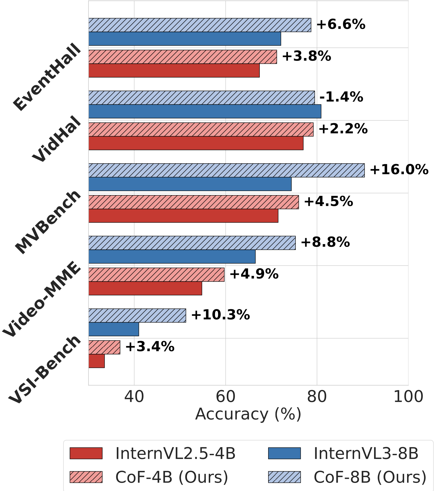

Chain-of-Frames (CoF) — CVPR Papers

We propose chain-of-frames (CoF) to obtain video LLMs whose reasoning steps are grounded in, and explicitly refer to, the relevant frames. Fine-tuned on a large dataset of synthetic and natural video reasoning traces, our models outperform baselines without requiring complex inference pipelines.
I'm a Ph.D. candidate in ECE at NYU, working on Multimodal LLMs with a focus on video understanding, cross-modal alignment, and temporal reasoning. My first-author research spans frame-aware reasoning (Chain-of-Frames), multimodal alignment (EMMA), and evaluation of foundation models (SpotEdit, SYNCR), with publications at CVPR, ICLR, TMLR, and NeurIPS. I have also interned at Adobe and Apple, applying this research in production-scale settings. I am graduating in December 2026 and am open to full-time research scientist positions — feel free to reach out.